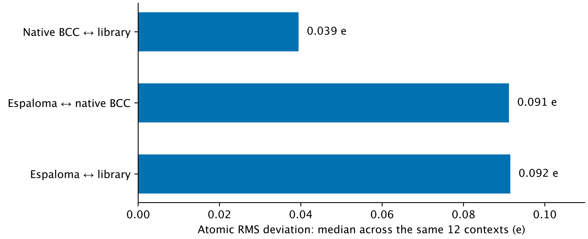

Real results · the same 12 contexts for all pairs. These are differences between assigned charges, not errors relative to an experimental charge and not a ranking of force fields. Espaloma: published v0.0.8 weights with formal total provided via q_ref.